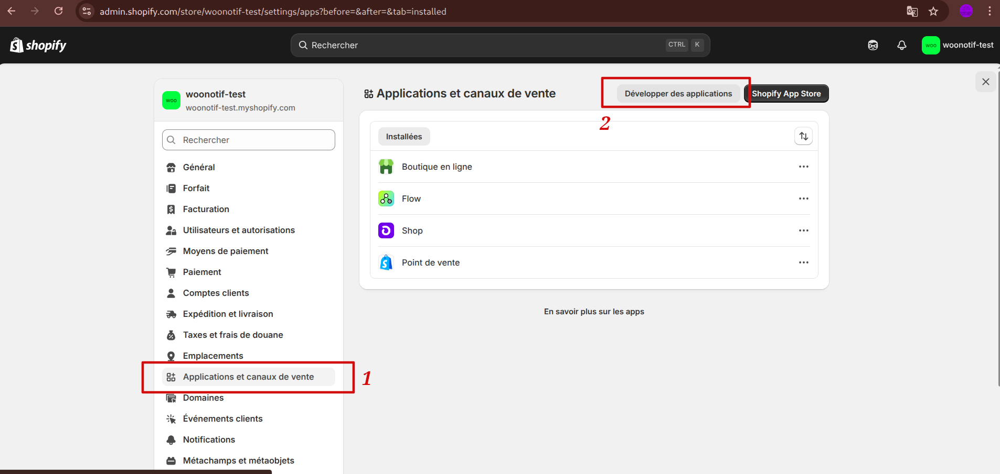
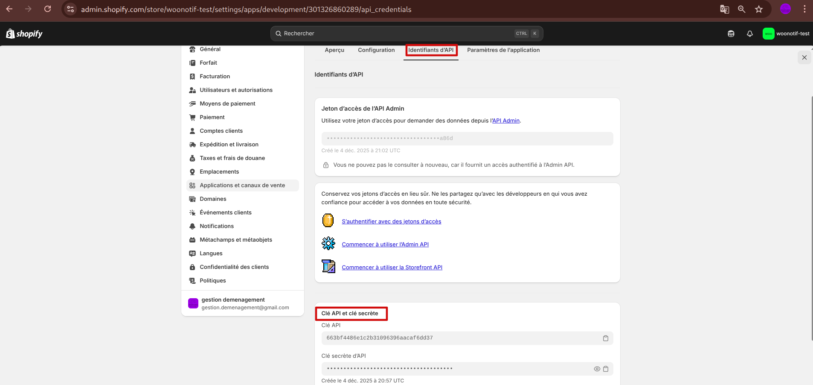
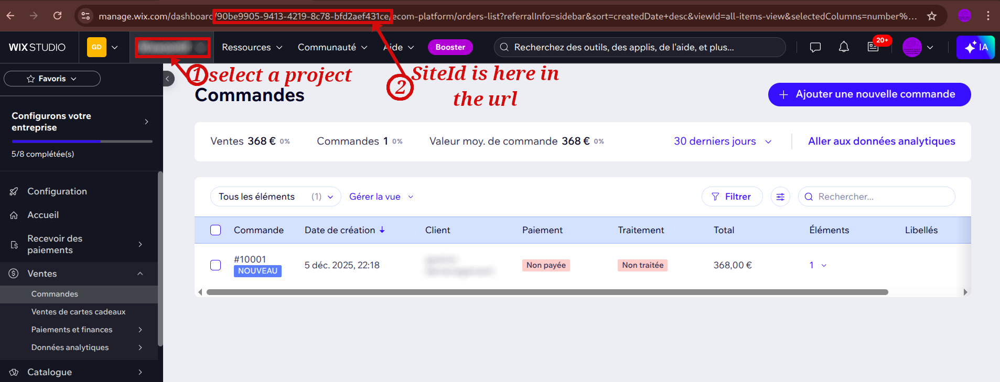
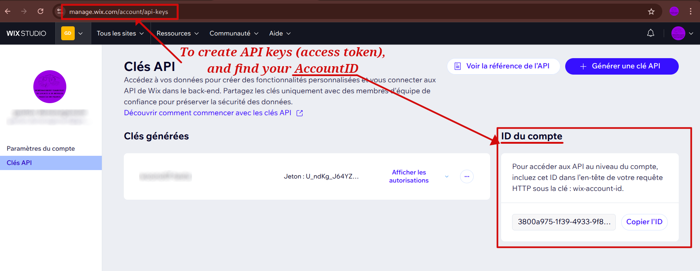
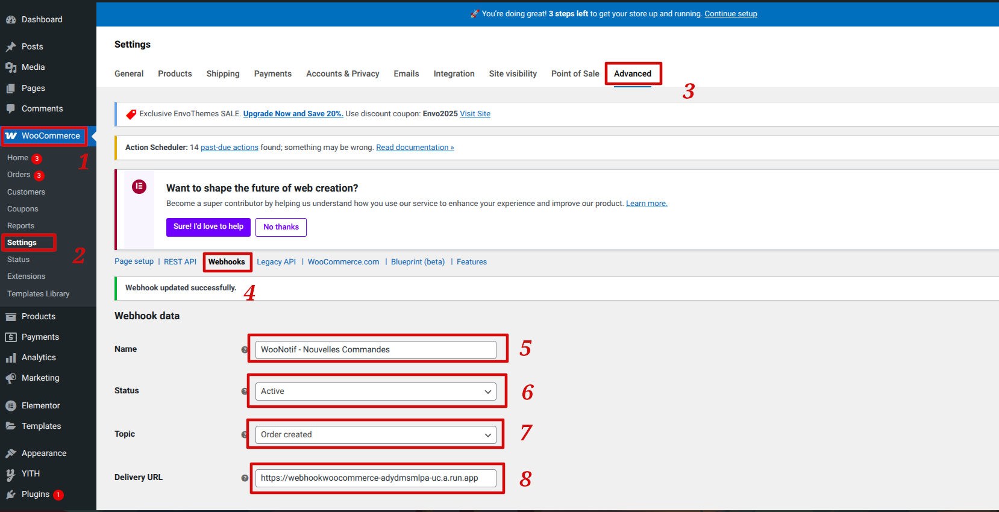
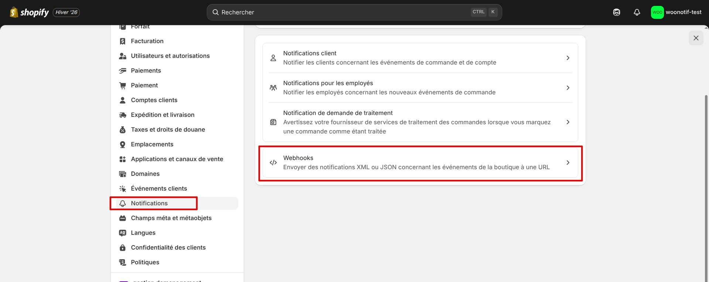
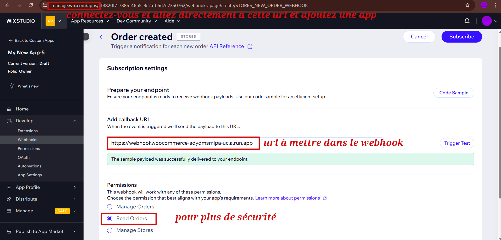

Suivez vos commandes e-commerce en temps réel sur WooCommerce, Shopify, Wix et plus encore.
WooNotif est une application mobile multi-plateforme pensée pour les propriétaires de boutiques e-commerce qui veulent suivre leurs commandes en temps réel, directement depuis leur smartphone.
L'application ne stocke aucune donnée sur des serveurs distants : tout reste sur votre appareil. Les commandes ne sont jamais modifiées sur vos boutiques en ligne.
WooNotif supporte plusieurs plateformes e-commerce. Voici comment obtenir vos clés API pour chacune :




Conseil de sécurité : Pour toutes les plateformes, nous recommandons d'utiliser un compte dédié avec uniquement les permissions de lecture nécessaires.
Guide complet disponible : Consultez notre guide détaillé de configuration API pour WooCommerce, Shopify et Wix avec captures d'écran et instructions étape par étape.
Avant de connecter vos vraies boutiques, découvrez toutes les fonctionnalités de WooNotif grâce aux comptes de test préconfigurés directement dans l'application !
Ces comptes vous permettent de découvrir l'application et ses capacités multi-plateformes en quelques minutes, sans risque pour vos données réelles.
Pour recevoir des notifications push instantanées dès qu'une nouvelle commande arrive, configurez les webhooks sur vos plateformes e-commerce. Cette étape est optionnelle mais recommandée pour une expérience optimale.
https://webhookwoocommerce-adydmsmlpa-uc.a.run.app
https://webhookwoocommerce-adydmsmlpa-uc.a.run.app
https://webhookwoocommerce-adydmsmlpa-uc.a.run.app
💡 Note importante :
Les webhooks sont optionnels mais fortement recommandés pour une expérience optimale. Sans webhooks, l'application vérifie les nouvelles commandes toutes les 15 minutes minimum (limitation iOS/Android), mais ça reste peu fiable car les systèmes d'exploitation limitent l'utilisation en arrière plan donc quand vous quittez l'application sans webhooks c'est très peu probable d'avoir les notifications de nouvelles commandes.
Tous les détails sont expliqués dans notre politique de confidentialité. Pour en savoir plus sur la configuration sécurisée des APIs, consultez notre guide de sécurité.
WooNotif est déjà riche en fonctionnalités :
WooNotif est gratuit à utiliser, mais nous proposons un plan premium optionnel pour soutenir le développement et supprimer les publicités :
💡 Note :
Le plan premium est entièrement optionnel. WooNotif reste pleinement fonctionnel sans achat, seules les publicités sont supprimées pour les utilisateurs premium.
Nous travaillons sur de nouvelles plateformes et améliorations :
Ces évolutions seront annoncées dans les futures mises à jour de l'application.
Cette page est uniquement informative et destinée à accompagner la fiche Google Play de l’application WooNotif.